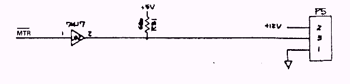
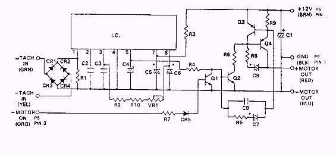

![[Prev]](../../../../images/blue_prev.gif)
![[Next]](../../../../images/blue_next.gif)
![[Contents]](../../../../images/blue_toc.gif)
![[Commodore]](../../../../images/blue_cbm.gif)
![[New]](../../../../images/blue_new.gif)
![[Search]](../../../../images/blue_search.gif)
![[Home]](../../../../images/blue_home.gif)
1541 CIRCUIT THEORY


Spindle Motor Control Circuits
_MTR output from the PLA is active "low". This signal is passed, through the current driver UD2,
to the motor control PCB. When _MTR is "low," Q1 is biased off, and Q2, Q3, and Q4 are biased
on, allowing current flow through the spindle motor coil. Attached to the shaft of the spindle motor
is an inductive tachometer that generates low level AC voltages, as the motor spins. The output of
the tachometer is rectified by CR1-CR4. IC 1 monitors the output of the rectifier and adjusts the bias
to Q2, which changes the bias on Q3 and Q4 to regulate motor current for a constant velocity. VR1
is a manual speed adjustment. The speed can be adjusted by watching the 60Hz strobe as the adjustment
is made or loading the system test from the diagnostic disc.
The Newtronics Motor Speed PCB is electronically the same as the ALPS Motor Speed PCB, but some
of the discrete components have been integrated.